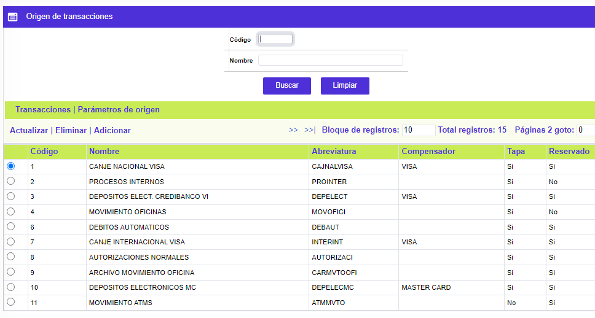
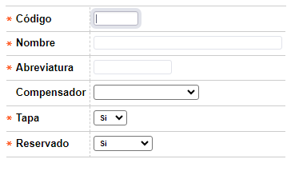
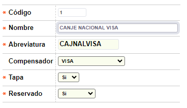

Origen de transacciones
A través de esta opción se habilita la consulta y/o mantenimiento, reservado a funcionarios de OpenCard S.A.S., de la tabla que almacena los códigos de los diferentes orígenes o fuentes de las transacciones, determinando para cada uno de estos, las transacciones correspondientes o propias de cada origen, y para cada una de ellas, entre otros parámetros, datos de plazo, multa y costo respectivo, así como las validaciones a las cuales deben someterse. Además, provee la opción de relacionar las causales de devolución. El formulario contiene los enlaces: Transacciones, Parámetros de origen, Actualizar, Eliminar y Adicionar. Igualmente, dispone de un filtro mediante el cual el usuario puede hacer consultas selectivas bien sea por el código del origen o por el nombre del mismo.

Adicionar: Al activar ese enlace se despliega el siguiente formulario:

Descripción de campos
Código |
Campo numérico de 3 dígitos, obligatorio, en el cual se registra el código asignado a cada uno de los orígenes de transacciones definidos por la entidad, tanto externos (franquicias, compensadores), como locales, internacionales, internos, etc. |
Nombre |
En este campo alfanumérico de 30 caracteres, obligatorio, se registra la descripción o definición asociada a cada código de origen de transacciones. |
Abreviatura |
Campo alfanumérico de 10 caracteres, obligatorio, en el que se ingresa la abreviatura o nombre corto utilizado que identifica al origen y que se utiliza para reportes impresos o consultas. |
Compensador |
Este campo tipo combo permite seleccionar el compensadores a través del cual se va a procesar el movimiento que ingresa por el origen. |
Tapa |
Campo obligatorio que contiene lista de valores tipo combo, de la que debe seleccionarse entre Si o No, el origen requiere que una vez se efectúe el cambio de calendario se habilite para el siguiente día hábil, lo que aplica principalmente para aquellos orígenes basados en cargues o integración de movimiento. |
Reservado |
En este campo que contiene lista de valores tipo combo, de la que debe seleccionarse entre: Si o No, el código y origen han sido reservados para uso exclusivo de OpenCard, o corresponden a Convenios. Para tal fin, existen unos rangos seleccionados previamente, por lo cual si la entidad requiere definir uno o más orígenes puede hacerlo utilizando un código diferente al del rango reservado, siempre y cuando se tenga presente que ello implica desarrollos adicionales o en el mejor de los casos, adecuación de los programas existentes. |
Actualizar: Al activar ese enlace se despliega el siguiente formulario, en el cual el único campo no modificable es Código:

Nuevo cargue: En el evento en que aquellos orígenes de transacciones, asociados o provenientes de un archivo, mediante esta funcionalidad, habilita un nuevo cargue, dentro de la misma fecha de proceso.